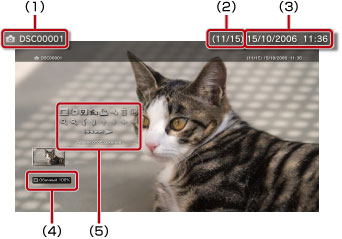

Фото > Панель управления
Панель управления
Выполнение различных операций с помощью панели управления, отображаемой на экране. Панель управления отображается и скрывается при нажатии кнопки  .
.
Режим отображения

Изменение размера изображения, отображаемого на экране.
| Обычный | Устанавливается для отображения изображения во весь экран без изменения пропорций. |
|---|---|
| Масштаб | Устанавливается для отображения изображения во весь экран без изменения пропорций. Верхние и нижние или левые и правые части изображения обрезаются. |
Подсказка
В зависимости от файла изображения, возможно, не удастся переключить режим отображения.
Изменить эффект
Изменение способа переключения изображений.
| Обычный | Устанавливается для замены отображаемого окна следующим. |
|---|---|
| Слайд | Устанавливается для замены отображаемого окна следующим в формате слайд-шоу. |
| Затухание (Fade) | Установка эффекта затухания при переключении на следующее изображение. |
Обрабатывать
Удаление ненужных фрагментов с верхней, нижней, левой и правой стороны изображения. Для выбора сохраняемой области используйте левый и правый джойстики беспроводного контроллера. Левый джойстик служит для перемещения в любом направлении, а правый – для увеличения и уменьшения изображения. Обработанные изображения сохраняются с измененным именем файла.
Подсказка
Обработать можно только изображения, сохраненные на системном накопителе системы PS3™.
Добавить в список воспроизведения
Добавление изображения к списку воспроизведения.
Подсказка
К списку воспроизведения могут быть добавлены только изображения, хранящиеся на системном накопителе.
Печать
Печать изображения с помощью принтера.
Подсказка
Предварительно необходимо настроить принтер в разделе [Выбор принтера] меню  (Настройки) >
(Настройки) >  (Настройки принтера).
(Настройки принтера).
Установить как обои
Служит для установки изображения на экране в качестве обоев. Изображение устанавливается так, как оно отображается на экране, если оно увеличено, уменьшено или повернуто.
Подсказки
- Когда обои не используются, настройте параметры в меню (Настройки) >
 (Настройки темы) > [Фон].
(Настройки темы) > [Фон]. - Одновременно можно установить в качестве обоев только одно изображение. При выборе другого изображения текущее изображение затирается.
Удалить
Удаление изображений.
Подсказка
Могут быть удалены только изображения, хранящиеся на системном накопителе.
Отобразить
Просмотр информации об изображении. При каждом нажатии кнопки  на экране отображаются либо сведения о Exif, либо информационная панель, либо не отображается никакой дополнительной информации.
на экране отображаются либо сведения о Exif, либо информационная панель, либо не отображается никакой дополнительной информации.
Экран с информационной панелью

(1) |
Имя изображения |
|---|---|
(2) |
Номер изображения / общее количество изображений |
(3) |
Дата и время записи |
(4) |
Значок состояния |
(5) |
Панели управления |
Увеличить / Уменьшить

Эти функции предназначены для увеличения и уменьшения изображения. Используйте левый джойстик беспроводного контроллера для прокрутки в любом направлении, а правый – для увеличения и уменьшения изображения.
Повернуть влево / Повернуть вправо
Поворот изображения влево или вправо на 90 градусов.
Вверх / Вниз / Влево / Вправо
Перемещение изображения для отображения его скрытых частей, например, когда для параметра (Режим отображения) задано значение [Масштаб].
Назад / Далее
Просмотр предыдущего или следующего изображения.
Слайд-шоу
Автоматический просмотр изображений по порядку.